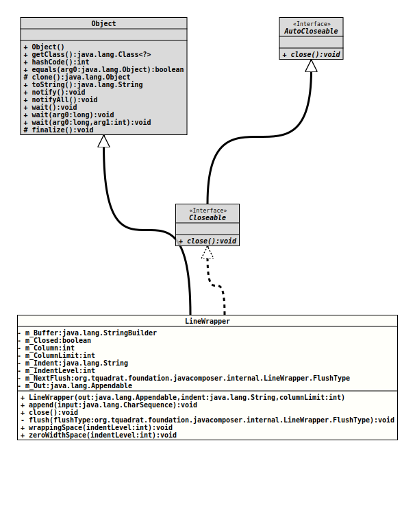

Class LineWrapper
java.lang.Object
org.tquadrat.foundation.javacomposer.internal.LineWrapper
- All Implemented Interfaces:
Closeable,AutoCloseable
@ClassVersion(sourceVersion="$Id: LineWrapper.java 1105 2024-02-28 12:58:46Z tquadrat $")
@API(status=INTERNAL,
since="0.0.5")
public final class LineWrapper
extends Object
implements Closeable
Implements soft line wrapping on an
Appendable.
To use, append characters using
append(CharSequence)
or soft-wrapping spaces using
wrappingSpace(int).- Author:
- Square,Inc.
- Modified by:
- Thomas Thrien (thomas.thrien@tquadrat.org)
- Version:
- $Id: LineWrapper.java 1105 2024-02-28 12:58:46Z tquadrat $
- Since:
- 0.0.5
- UML Diagram
-

UML Diagram for "org.tquadrat.foundation.javacomposer.internal.LineWrapper"
{kind=link}
-
Nested Class Summary
Nested Classes -
Field Summary
FieldsModifier and TypeFieldDescriptionprivate final StringBuilderCharacters written since the last wrapping space that haven't yet been flushed.private booleanThe flag that indicates whether this line wrapper was already closed.private intThe number of characters since the most recent newline.private final intThe maximum line length.private final StringThe indentation String.private int-1 if we have no buffering; otherwise the number ofm_Indents to write after wrapping.private LineWrapper.FlushTypenullif we have no buffering; otherwise the type to pass to the next call toflush(org.tquadrat.foundation.javacomposer.internal.LineWrapper.FlushType).private final AppendableThe output target. -
Constructor Summary
ConstructorsConstructorDescriptionLineWrapper(Appendable out, String indent, int columnLimit) Creates a newLineWrapperinstance. -
Method Summary
Modifier and TypeMethodDescriptionfinal voidappend(CharSequence input) Emits the given String.final voidclose()This implementation flushes any outstanding text and forbid future writes to this line wrapper.private final voidflush(LineWrapper.FlushType flushType) Writes the space followed by any buffered text that follows it.final voidwrappingSpace(int indentLevel) Emits either a space or a newline character.final voidzeroWidthSpace(int indentLevel) Emits a newline character if the line will exceed its limit, otherwise do nothing.
-
Field Details
-
m_Buffer
Characters written since the last wrapping space that haven't yet been flushed. -
m_Closed
The flag that indicates whether this line wrapper was already closed. -
m_Column
-
m_ColumnLimit
The maximum line length. -
m_Indent
The indentation String. -
m_IndentLevel
-1 if we have no buffering; otherwise the number ofm_Indents to write after wrapping. -
m_NextFlush
nullif we have no buffering; otherwise the type to pass to the next call toflush(org.tquadrat.foundation.javacomposer.internal.LineWrapper.FlushType). -
m_Out
The output target.
-
-
Constructor Details
-
LineWrapper
Creates a newLineWrapperinstance.- Parameters:
out- The output target.indent- The indentation string.columnLimit- The maximum line length.
-
-
Method Details
-
append
Emits the given String. This may be buffered to permit line wraps to be inserted.- Parameters:
input- The string to emit.- Throws:
IOException- A problem occurred when writing to the output target.
-
close
This implementation flushes any outstanding text and forbid future writes to this line wrapper.- Specified by:
closein interfaceAutoCloseable- Specified by:
closein interfaceCloseable- Throws:
IOException
-
flush
Writes the space followed by any buffered text that follows it.- Parameters:
flushType- The flush type.- Throws:
IOException- A problem occurred when writing to the output target.
-
wrappingSpace
Emits either a space or a newline character.- Parameters:
indentLevel- The indentation level.- Throws:
IOException- A problem occurred when writing to the output target.
-
zeroWidthSpace
Emits a newline character if the line will exceed its limit, otherwise do nothing.- Parameters:
indentLevel- The indentation level.- Throws:
IOException- A problem occurred when writing to the output target.
-